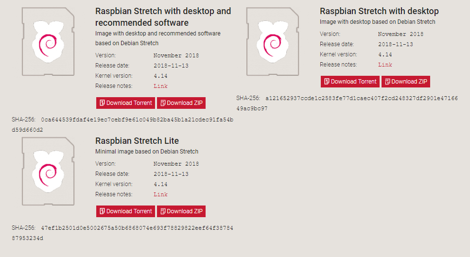
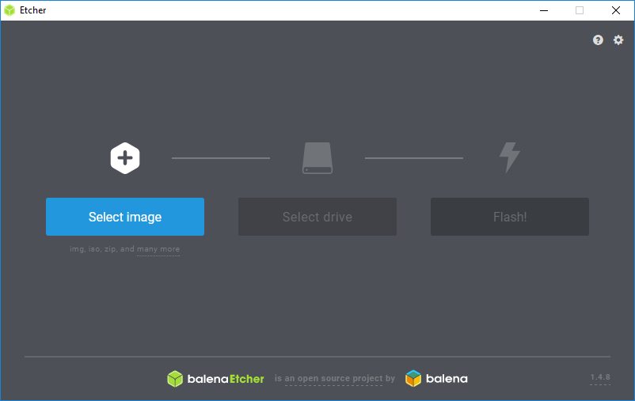

Le Raspberry Pi
1. Introduction
Le Raspberry Pi est un micro-ordinateur à faible coût (environ 40€), fonction-nant sous Linux, et pas plus grand qu’une carte de crédit. Il est entre autre capable d’afficher des vidéos en HD (1080p), de servir de poste de bureau-tique/internet, de console de jeu et surtout d’outil d’initiation à l’informatique. Grâce à ses ports d’entrées/sorties matériels, il peut recevoir des informations de capteurs externes, piloter des actionneurs, transmettre des signaux... Ses champs d’applications sont infinis.1
2. Historique du Raspberry Pi
2.1 Genèse de l'idée

Eben Upton, l'un des inventeurs du Raspberry Pi
Voici un extrait traduit en Français de l’explication donnée sur le site officiel de la fondation Raspberry Pi quant à la genèse de cette idée :
« L'idée d'un ordinateur petit et bon marché pour l'éducation est venue en 2006, alors qu'Eben Upton et ses collègues du laboratoire d'informatique de l'université de Cambridge, parmi lesquels Rob Mullins, Jack Lang et Alan Mycroft, se préoccupèrent de la baisse régulière, année après année, du nombre et du niveau de compétence des candidats souhaitant suivre des études d'informatique. De la situation des années 1990 où les candidats qui se présentaient étaient des programmeurs amateurs, le paysage des années 2000 diffère grandement : un candidat typique pourra n'avoir fait qu'un peu de design web. »2
Le constat en 2006 était le suivant :
- Une baisse de niveau en informatique des candidats à l’université
- Une formation scolaire inadaptée à la programmation
- Des systèmes d’exploitation classiques inadaptés à l’expérimentation
- Des ordinateurs chers pour faire de la programmation expérimentale
La solution retenue fut alors de créer un micro ordinateur open source et abordable : Le Raspberry Pi
2.2 Chronologie rapide
| Date | Événement | Caractéristiques |
|---|---|---|
| Août 2011 | Impression des 1eres cartes Alpha | |
| Février 2012 | Création de la distribution Raspbian | |
| Avril - Juin 2012 | Sortie du Raspberry pi 1 modèle B | ARM 32bits 700Mhz - 256Mo |
| Septembre 2012 | Début de la fabrication en Angleterre | |
| Février 2013 | Le modèle A est disponible | ARM 32bits 700Mhz - 256Mo |
| Mai 2013 | Création d'un shield caméra | 5MP - 1080p |
| Juillet 2014 | Sortie du modèle B+ | ARM 32bits 700Mhz - 512Mo |
| Mai 2013 | Sortie du modèle 2B | ARM 32bits 900Mhz QuadCore - 1Go |
| Février 2016 | Sortie du modèle 3B | ARM 64bits 1.2Ghz QuadCore - 1Go |
| Février 2016 | Sortie du modèle 0 | ARM 32bits 1Ghz - 512Mo |
| Février 2017 | Sortie du modèle 0W | ARM 32bits 1Ghz - 512Mo |
| Mars 2018 | Sortie du modèle 3B+ | ARM 64bits 1.4Ghz QuadCore - 1Go |
| Novembre 2018 | Sortie du modèle 3A+ | ARM 64bits 1.4Ghz QuadCore - 512Mo |
Photo de famille, l'originale est à consulter sur le site raspi.tv

3. Composition du Raspberry Pi
Le Raspberry pi 3B est l'avant dernier modèle à se jour, et c’est celui-ci que nous allons utiliser en classe.

3.1 Le SOC
Le SOC (System On a Chip) est une puce n’intégrant pas seulement un microprocesseur mais aussi d’autres périphériques nécessaires au fonctionnement d’un ordinateur, tout cela dans un seul boîtier :
- Un microprocesseur
- Un processeur graphique (GPU)
- De la RAM
- Tous les circuits annexes mis en oeuvre dans un système informatique.
3.2 Les entrées sorties
Le Raspberry Pi dispose de plusieurs connecteurs sur son boîtier, pour le modèle 3B nous avons :
- Quatre connecteurs USB 2.0
- Une connecteur d’alimentation type micro-USB
- Un port HDMI
- Un port Ethernet 100 Mbit/s
- Une entrée/sortie audio
- Un connecteur bus CSI (pour la connexion de la caméra)
- Un connecteur bus DSI (pour la connexion d’un écran)
- Un GPIO
3.3 Le GPIO
Le GPIO pour General Purpose Input/Output est un interface Entrée/Sortie numérique entièrement programmable. Le Raspberry Pi ne disposant malheureusement pas de CAN ou CNA il faut interfacer une autre carte (Arduino) ou un circuit pour traiter des données analogiques.
Ci-dessous la figure montre le brochage du GPIO pour un Raspberry Pi 3B :
 Raspberry PI GPIO from pinout.xyz
Raspberry PI GPIO from pinout.xyz
Warning
Le Raspberry Pi et ce pour n’importe quel modèle, ne supporte pas une tension d’entrée supérieure à 3.3V sur son GPIO, les niveaux logiques sont donc :
- « 1 » = 3.3V
- « 0 » = 0V
4. Utilisation du Raspberry Pi
4.1 OS utilisables sur le raspberry Pi
Le Raspberry Pi à l'origine ne fonctionnait que sur un système d’exploitation GNU Linux, appelé Raspbian, grâce au succès et à l'amélioration de la carte d'autres fabricants ont adapté leurs systèmes pour qu'il puisse fonctionner sur la framboise :
- Raspbian : Distribution linux d'origine, basée sur Debian et activement maintenue par la Raspberry Foundation.
- LibreELEC : Distribution linux spécifique à la gestion de contenu multimédia (Home-Cinéma), utilise le système Kodi
- Ubuntu Core : Célèbre distribution Linux, ici adaptée pour l'IoT.
- Windows 10 IoT Core : Le leader mondial a lui succombé à la framboise et propose son dernier une version de son dernier OS adapté à l'IoT.
4.2 Installation de Raspbian
Pour toutes les activités au lycée Rascol nous utiliserons l'os Raspbian, le téléchargement de la dernière version se fera sur le site raspberrypi.org

Suivant l'utilisation désirée nous choisirons la version lite ou desktop, bien souvent la version lite qui ne comporte pas d'interface graphique ou "gui" est suffisante. En effet, le Raspberry Pi partage son processeur et sa mémoire pour la partie graphique, en désactivant le gui nous gagnons donc en rapidité.
- Téléchargez le .zip désirée et ne le décompressez pas.
- Téléchargez le logiciel Etcher qui permet de graver de manière fiable des images .iso sur des supports externes (SD,USB)
- Insérez une carte micro SD de minimum 8Go, une vitesse de 10 est conseillée. Le formatage préalable n'est pas nécessaire Etcher s'occupe de tout !
- Dans Etcher choisissez votre fichier .zip et votre carte SD et appuyez sur Flash!

4.3 Premier démarrage
⚠️La mise sous tension du Raspberry Pi se fait en dernier⚠️, il faut au préalable connecter tous les périphériques : clavier, souris, écran, cordon réseau, insérer la carte SD et en dernier l'alimentation. Le Raspberry Pi n'ayant pas de bouton ON/OFF c'est la connexion du câble d'alimentation qui le fera automatique démarrer.
De la même manière l'arrêt se fera en cliquant sur Menu > Shutdown avec le gui ou en tapant la commande sudo poweroff en mode console.
Warning
Surtout ne jamais retirer la carte SD du Raspberry Pi en cours d'exécution, sous peine de l'endommager définitivement
Une fois la framboise démarrée un nom d'utilisateur et un mot de passe vous seront peut-être demandés :
login : pi pwd : raspberry
Info
Quand vous tapez un mot de passe dans une console Linux rien ne s'affiche à l'écran. C'est normal ! C'est une sécurité supplémentaire, le mot de passe que vous tapez sera bien pris en compte.
4.4 Modification de la disposition clavier
Lors du premier démarrage avec la distribution Raspbian light, la disposition du clavier est par défaut en Anglais (qwerty), nous donnons ci-dessous les étapes pour la changer :
- Après vous êtres loggé
login : pipasswd : raspberry, ouvrez le menu de configuration avecsudo raspi-config - Allez dans
4 Localisation Options→Change Keyboard Layout→Generic 105-key→French